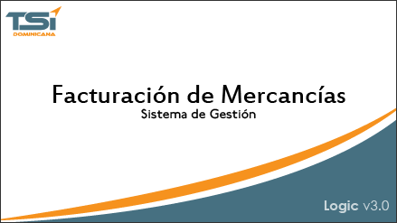

FTM · MÓDULO DE FACTURACIÓN
Facturación de Mercancías
Emite facturas, proformas, notas de crédito y devoluciones con comprobante fiscal electrónico, sobre el mismo catálogo de clientes y mercancías que usan Inventario y Cuentas x Cobrar. Un documento facturado actualiza existencia, balance del cliente y asiento contable en el mismo momento.

Descripción del módulo
La venta se registra una vez y llega a donde tenga que llegar
FTM es el punto de entrada de todo lo que sale de la empresa. Cada tipo de documento se define una vez — factura, proforma, conduce, devolución, nota de crédito — y ahí queda establecido si aumenta o rebaja el inventario y si afecta o no las Cuentas x Cobrar. El usuario que factura no decide eso: lo decide la configuración del documento.
Sobre esa base el módulo maneja vendedores con comisiones por mercancía, por cliente, por venta o por cobro; ofertas con vigencia; canales de venta; múltiples monedas y tasas; y varios tipos de pago con comportamiento contable propio. Los documentos que requieren autorización pasan por la bandeja de aprobación antes de afectar nada.
- Facturas, proformas, devoluciones y notas de crédito con e-CF.
- Catálogo de clientes y mercancías compartido con INV, CXC y PVT.
- Seis clasificaciones de documento según cómo afectan Inventario y CXC.
- Vendedores, grupos de vendedores y comisiones configurables.
- Múltiples monedas, tasas y tipos de pago.
- Bandeja de aprobación para documentos que requieren autorización.
- Formatos de impresión por documento: carta, matricial, 80 mm y 58 mm.
- Log inalterable de quién creó y quién modificó cada documento.
Funcionalidades
Todo lo que trae el módulo
Ventanas y procesos que se instalan con FTM. Los catálogos marcados como compartidos son los mismos registros que usan los demás módulos, no una copia.
Catálogos
- Clientes — compartido con Cuentas x Cobrar
- Clientes de contado — captura rápida en el mostrador
- Vendedores y grupos de vendedores
- Vendedores x clientes — asignación de cartera
- Canales de venta
- Ofertas — con vigencia por fecha
- Mercancías — compartido con Inventario
Documentos y movimientos
- Movimientos de facturación — la ventana principal
- Devoluciones sobre documento existente
- Conduces y despachos
- Transferencias entre almacenes
- Visor de movimientos — consulta y reimpresión
- Precio y costo del movimiento — revisión por línea
- Definición de documentos — tipo, secuencia, formato
Fiscal · e-CF
- Secuencias de NCF y eNCF
- Generación de comprobantes
- Firma y envío del e-CF a la DGII
- Consulta de RNC del receptor
- Formato 606 — compras de bienes y servicios
- Formato 607 — ventas de bienes y servicios
Control y herramientas
- Bandeja de aprobación de documentos
- Validación de crédito del cliente al facturar
- Búsqueda unificada — campo y comparador
- Envío por correo desde el propio documento
- Editor de reportes y parámetros
- Seguridad por grupos, registros y campos
¿Lo vemos con sus documentos?
La demostración se hace sobre su forma de facturar, no sobre una empresa de ejemplo. Traiga una factura suya y la reproducimos en el sistema durante la reunión.
How to
Así se hace en LogicERP FTM
Grabaciones cortas de la operación real, sin edición ni locución de venta. Haga clic para reproducir.
Los videos aún no están grabados. Estos son los tres que proponemos para FTM, con su guion paso a paso; al grabarlos se sustituyen las miniaturas.
Capturas
Las pantallas del módulo
Haga clic en cualquiera para verla en tamaño completo.
Reportería
Los reportes que trae FTM
Cada reporte tiene sus propios parámetros y se exporta a PDF y Excel, o se envía por correo sin salir del sistema. Los reportes marcados a medida son ejemplos reales desarrollados para clientes: cuando un cliente necesita una vista que no existe, se agrega.
| Reporte | Parámetros principales | Para qué se usa |
|---|---|---|
| Movimientos de facturación | Fecha, documento, cliente, vendedor | Relación de todo lo facturado en el período, detallado o resumido. |
| Movimientos de facturación x NCF | Fecha, tipo de comprobante | Control fiscal del consumo de comprobantes emitidos. |
| Ventas por mercancía | Fecha, categoría, almacén | Qué se vende y en qué cantidad, por categoría de mercancía. |
| Ventas por cliente | Fecha, cartera, tipo de cliente | Concentración de ventas y comportamiento de compra. |
| Ventas totales a clientes x vendedor | Fecha, vendedor | Desempeño del vendedor sobre su propia cartera. |
| Comisión x ventas de vendedores | Fecha, vendedor, grupo | Liquidación de comisiones del período. |
| Comisión x ventas de vendedores x zona a medida | Fecha, zona | La misma liquidación agrupada por zona geográfica. |
| Beneficio por mercancía a medida | Fecha, mercancía, almacén | Margen entre precio de venta y costo por línea vendida. |
| Documentos anulados | Fecha, usuario, documento | Auditoría de anulaciones y quién las hizo. |
| Documentos pendientes de aprobación | Documento, estado | Qué está retenido y desde cuándo. |
| ITBIS en ventas | Fecha, tasa | Base para la declaración mensual. |
| Formato 607 · ventas | Período fiscal | Archivo de envío a la DGII. |
| Ofertas aplicadas | Fecha, oferta, cliente | Cuánto descuento se otorgó y a quién. |
| Ruta de despacho a medida | Fecha, ruta, empacador | Hoja de ruta para el reparto del día. |
| Formatos de factura | Documento, impresora | Carta, matricial, 80 mm y 58 mm, uno por tipo de documento. |
Los reportes se editan desde la propia interfaz del sistema. No hace falta que intervengamos para cambiar un título, agregar una columna o crear un formato de impresión nuevo — aunque lo hacemos si usted lo prefiere.
Otros módulos
El resto del sistema
Solicitar demostración
Le mostramos su propio proceso corriendo en LogicERP
Cuéntenos qué hace su empresa y en qué se le va el tiempo hoy. La demostración la hacemos sobre su caso — sus documentos, sus almacenes, su forma de cobrar — no sobre una empresa de ejemplo.